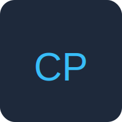
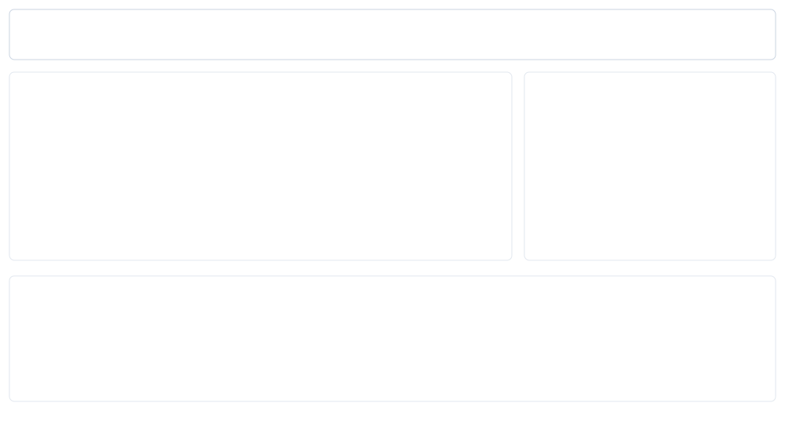

Site Name
Name: Chaos Portfolio
Description: A personal portfolio that introduces me as a student and aspiring software developer and showcases class/personal projects.
Optional domain: chaos-portfolio.dev
Site Purpose
The site provides a hub for introducing myself, showcasing projects, sharing short blog posts about what I learn, and providing contact links (GitHub, LinkedIn).
Scenarios
- Which projects has the student built, and what skills do those projects demonstrate?
- How can a potential collaborator or employer contact the student or view their GitHub/LinkedIn?
Color Scheme
- Primary: #1E293B - for headers, navigation, footer.
- Accent: #38BDF8 - for buttons, links, highlights.
- Background: #F8FAFC - main page background for good contrast.
Typography
- Headings: Poppins; used for site headings and titles.
- Body: Roboto; used for paragraphs and general text.
- Code snippets: monospace font; for blog code examples.
Wireframe
Mobile view (sketch)
Desktop view (sketch)
Sketch notes: header/navigation, intro hero, portfolio cards, blog preview, contact footer.
Testing
Self-check: validate HTML/CSS with a validator, run Lighthouse (accessibility, SEO, performance), check color contrast, and test on both mobile and desktop screens.